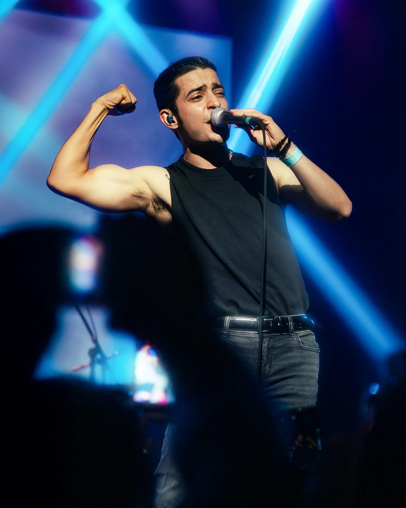
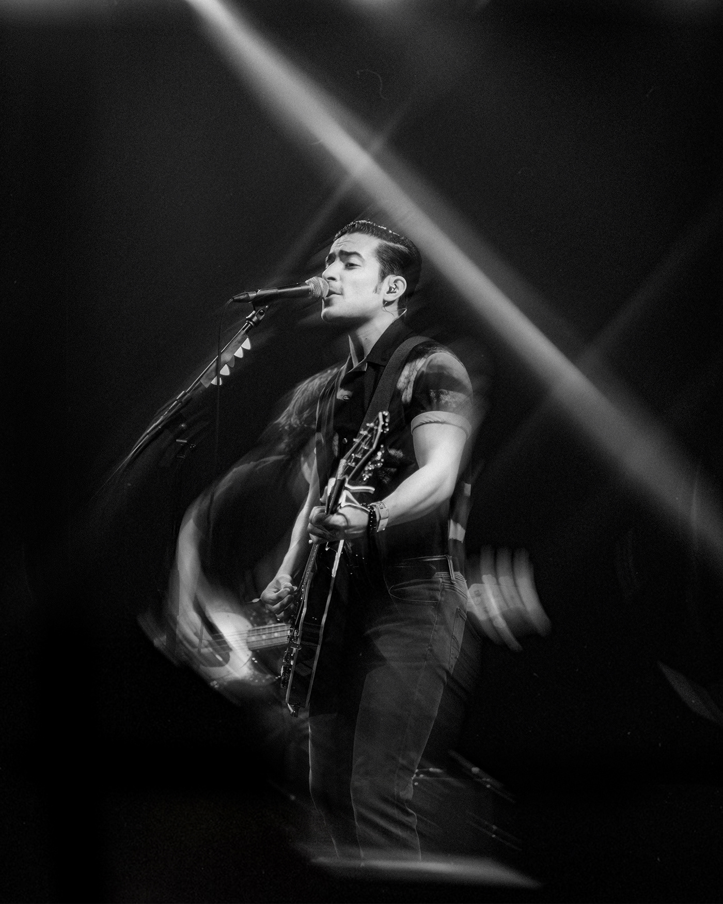
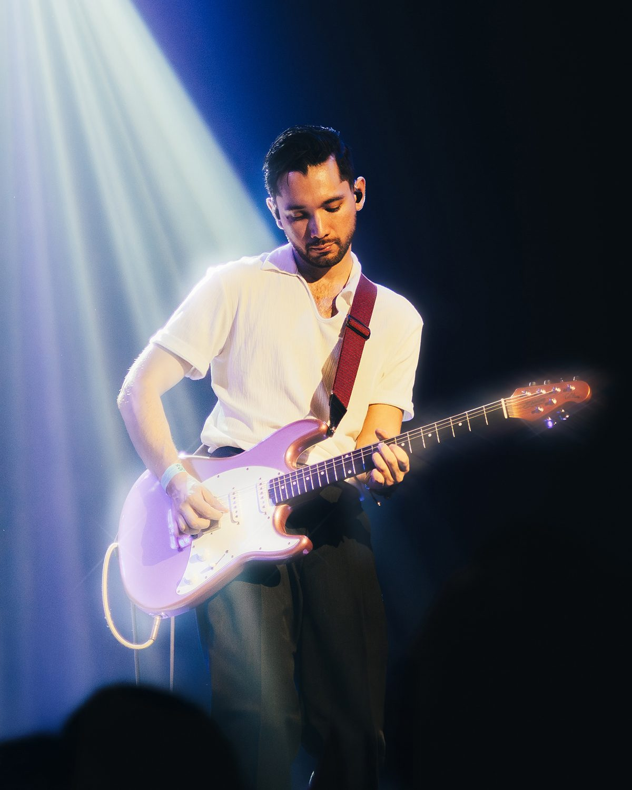
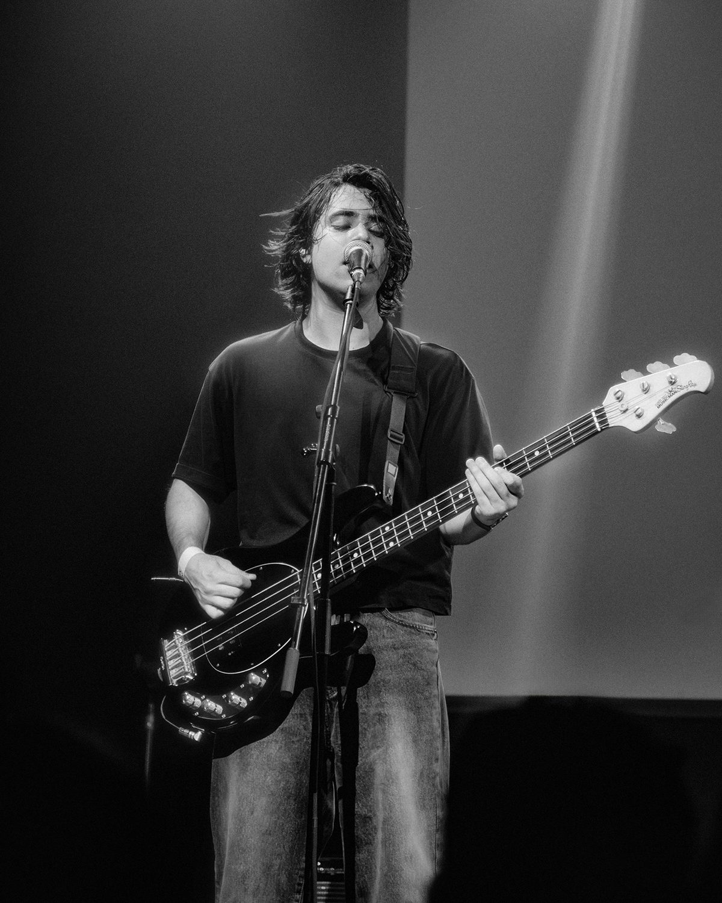
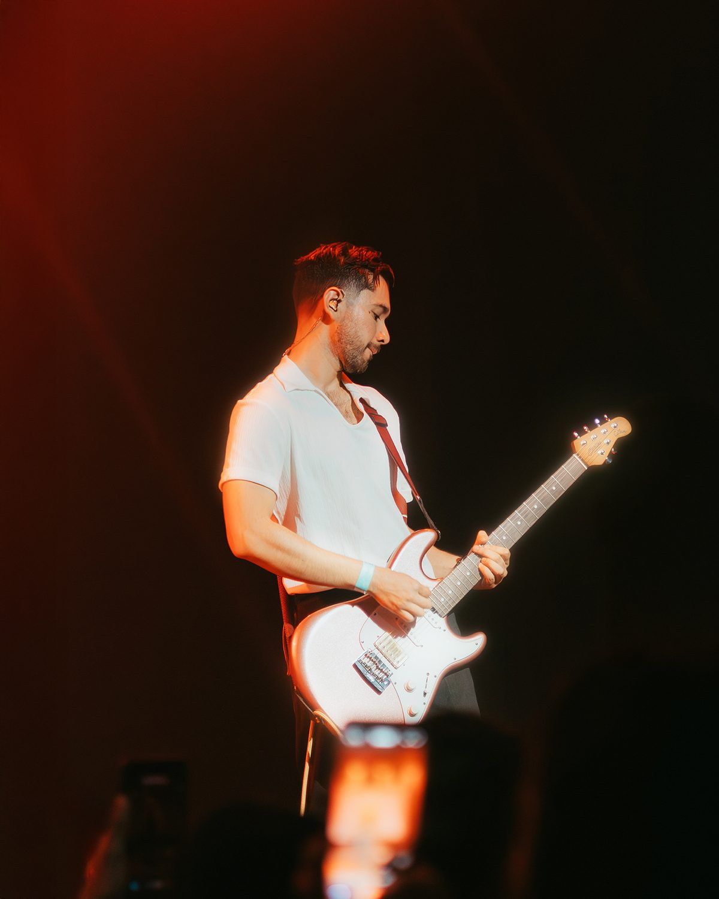
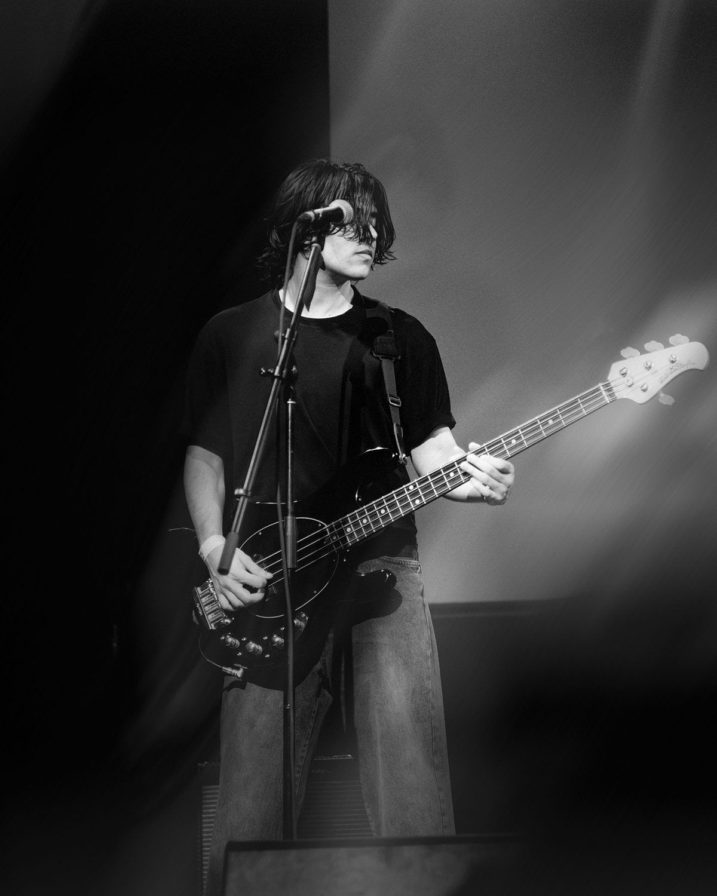

En vivo
Archivo en vivo. Lo último que tocaron, en fotos y video.
Último show
13 nov 2026 · Foro Corona, Monterrey
Cierre del Insania Tour · 21:00 · Con Chris Mendez · Abre Overthink · Ya pasó
No hay fechas anunciadas por ahora — cuando la banda publique una, aparecerá aquí.
Diez fotos en vivo

René en vivo, luces azules
Foto: Balleza Photography
“Diezell | INSANIA”, Behance, 9 feb 2026
Ver fuente ↗

René, puño en alto, luces azules
Foto: Balleza Photography
“Diezell | INSANIA”, Behance, 9 feb 2026
Ver fuente ↗

Diezell en Monterrey
Foto: Balleza Photography
“Diezell | Monterrey, Nuevo León”, Behance, 10 dic 2025
Ver fuente ↗

Bernie y su guitarra rosa
Foto: Balleza Photography
“Diezell | INSANIA”, Behance, 9 feb 2026
Ver fuente ↗

Mau, bajo y voz, en blanco y negro
Foto: Balleza Photography
“Diezell | INSANIA”, Behance, 9 feb 2026
Ver fuente ↗

Primera Noche Caótica, Foro Tims
Foto: Follow Control, enero 2024
Leer la nota ↗

René cantando, Emmash en la batería
Foto: Balleza Photography
“Diezell | INSANIA”, Behance, 9 feb 2026
Ver fuente ↗

Diezell en Foro Tims, “TAL VEZ”
Foto: Follow Control, enero 2024
Leer la nota ↗

Bernie bajo luz roja
Foto: Balleza Photography
“Diezell | INSANIA”, Behance, 9 feb 2026
Ver fuente ↗

Mau en el bajo, en blanco y negro
Foto: Balleza Photography
“Diezell | INSANIA”, Behance, 9 feb 2026
Ver fuente ↗
El video
9 ciudades + Mexicali TBA
Insania Tour 2026 · Archivo
La gira cerró el 13 nov 2026 en Foro Corona, Monterrey.
- 21 AGO 2026 · ViernesAguascalientes — Rocksí · 21:00 · PasslineYa pasó
- 22 AGO 2026 · SábadoGuadalajara — C3 Rooftop · 21:30 · TicketNow · Con RebelmateYa pasó
- 16 OCT 2026 · ViernesToluca — Foro Landó · PasslineYa pasó
- 17 OCT 2026 · SábadoQuerétaro — Centro Cultural El Árbol · 19:30 · PasslineYa pasó
- 23 OCT 2026 · ViernesPuebla — Madre Santa Pulquería · 20:00 · PasslineYa pasó
- 24 OCT 2026 · SábadoCiudad de México — Fuck Off Room · 20:00 · SuperboletosYa pasó
- 06 NOV 2026 · ViernesLeón — El Callejón · 19:00 · Passline · Con RebelmateYa pasó
- 07 NOV 2026 · SábadoSan Luis Potosí — Estación Wadley · 19:00 · Passline · Con Rebelmate e Intento FallidoYa pasó
- 13 NOV 2026 · ViernesMonterrey — Foro Corona · 21:00 · Ticketmaster · Con Chris Mendez · Abre OverthinkYa pasó
- TBA · Por anunciarMexicali — Fecha y recinto por anunciarTBA